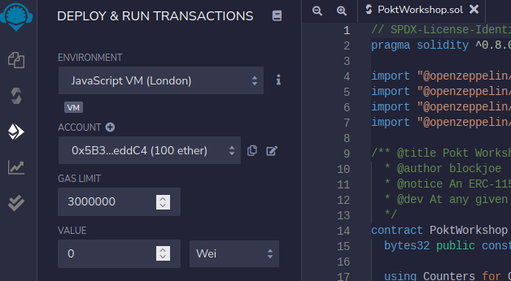
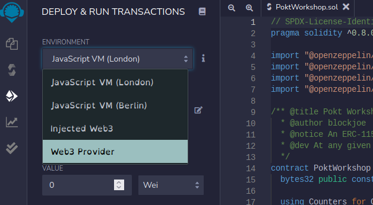
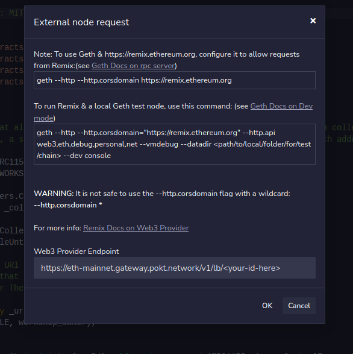
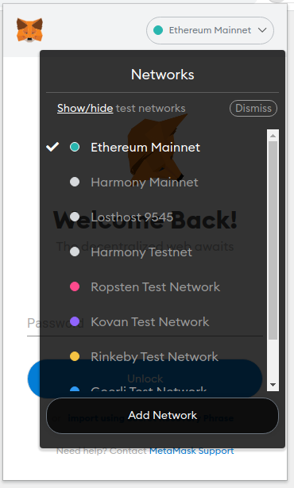
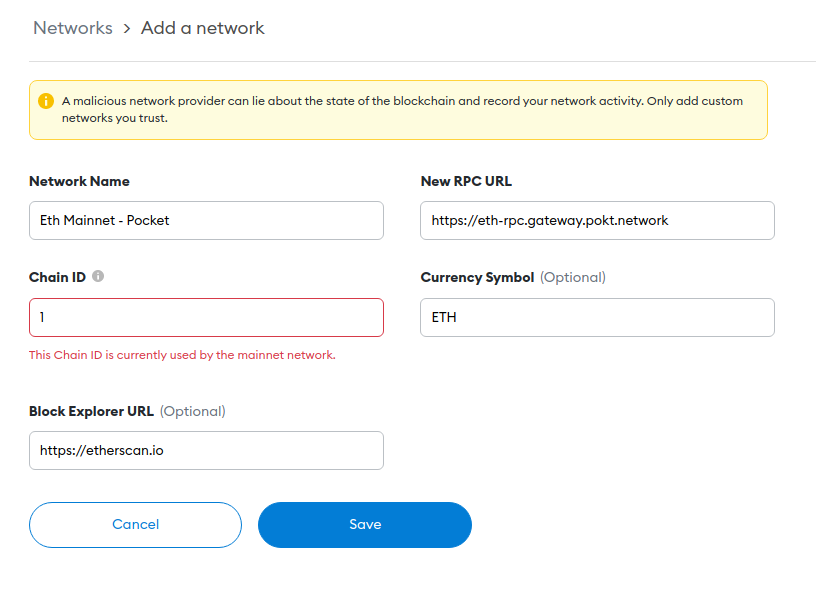

Builders Workshop
Pocket Network
A Decentralized RPC Provider
In the Ethereum network, there’s two ways to broadcast a transaction:
The miners (soon to be validators)? Is this why I have to pay for gas? No.
Miners and validators can choose to serve RPC, but they have no obligation to do so.
There is no on-chain incentive for nodes to serve RPC, even though it's currently the primary way dApps interact with Ethereum.
Private entities stepped up to fill the need, ex:
While accessible, they are all centralized and require monthly fiat payments to keep a dApp live.
Typically the only solution for smart contract developers who aren't prepared to run nodes.
Pocket Nodes run in a variety of configurations:
This makes Pocket resilient to outages at the cloud provider and data center level.
Once an app is staked, that relay rate is locked in.
As long as the app remains staked, there will be some guarantee of service.
With Pocket Network, web3 app infrastructure becomes an investment, not a recurring cost.
// hardhat.config.js
module.exports = {
networks: {
mainnet: {
url: "https://eth-mainnet.gateway.pokt.network/..",
chainId: 1
},
ropsten: {
url: "https://eth-ropsten.gateway.pokt.network/..",
chainId: 3
},
rinkby {
url: "https://eth-rinkby.gateway.pokt.network/..",
chainId: 4
},
goerli {
url: "https://eth-goerli.gateway.pokt.network/..",
chainId: 5
},
kovan: {
url: "https://poa-kovan.gateway.pokt.network/..",
chainId: 42
}
},
};
// truffle-config.js
module.exports = {
networks: {
mainnet: {
host: "https://eth-mainnet.gateway.pokt.network/..",
port: 443,
network_id: 1
},
ropsten: {
host: "https://eth-ropsten.gateway.pokt.network/..",
port: 443,
network_id: 3
},
rinkby {
host: "https://eth-rinkby.gateway.pokt.network/..",
port: 443,
network_id: 4
},
goerli {
host: "https://eth-goerli.gateway.pokt.network/..",
port: 443,
network_id: 5
},
kovan: {
host: "https://poa-kovan.gateway.pokt.network/..",
port: 443,
network_id: 42
}
}
};
The Portal RPC endpoint can be used as a
"Web3 Provider" in Remix
1) Navigate to the "Deploy and Run" tab.
2) Select "Web3 Provider" from the dropdown.
3) Enter your endpoint.
ethersimport { ethers } from "ethers";
const URL = "https://eth-mainnet.gateway.pokt.network/...";
let web3 = new ethers.JsonRpcProvider(URL);
web3.getBlockNumber()
.then(console.log);
web3.jsimport { Web3 } from "web3";
const URL = "https://eth-mainnet.gateway.pokt.network/...";
let web3 = new Web3(URL);
web3.eth.getBlockNumber()
.then(console.log);
web3.pyfrom web3 import Web3
URL = "https://eth-mainnet.gateway.pokt.network/..."
w3 = Web3(Web3.HTTPProvider(URL))
print(w3.eth.get_block('latest'))
MetaMask can be configured to use a public RPC provided by Pocket Network.
1) Select "Add Network" from the networks dropdown.
2) Enter in the public RPC information.
3) Repeat for any of the following chains you use.
https://docs.pokt.network/home/resources/public-rpc-endpoints
The same application in the Portal can easily be used to get RPC service to multiple chains.
import { ethers } from "ethers";
// These will end the same
let ETH = "https://eth-mainnet.gateway.pokt.network/...";
let POLY = "https://poly-mainnet.gateway.pokt.network/..";
let ethWeb3 = new ethers.JsonRpcProvider(ETH);
let polyWeb3 = new ethers.JsonRpcProvider(POLY);
ethWeb3.getBlockNumber()
.then(console.log);
polyWeb3.getBlockNumber()
.then(console.log);
A full list of supported chains can be found at:
https://docs.pokt.network/home/resources/references/supported-blockchains